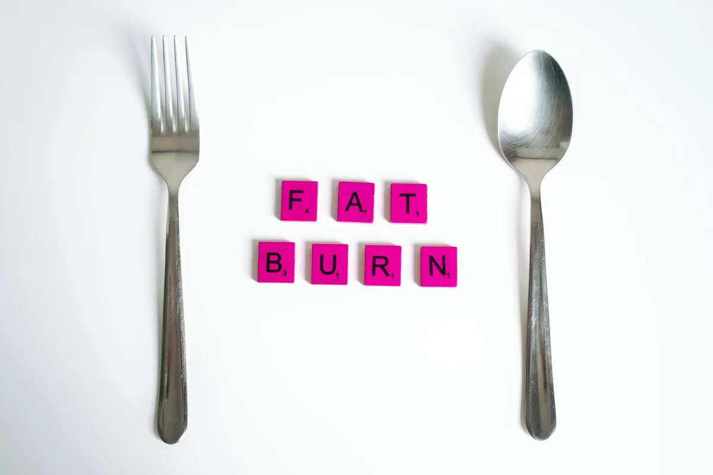
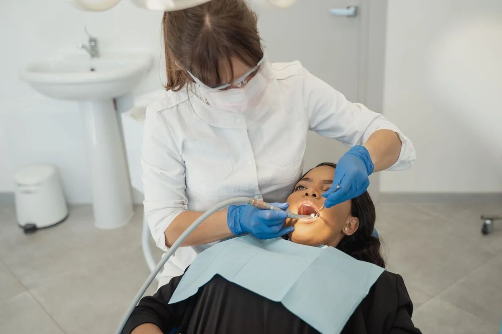

Sweet Tooth Survival: Why Cutting Sugar Won't Beat Cravings

Key takeaways
- I remember staring into my pantry, the midnight craving hitting hard.
- Cookies, chips, that half-eaten chocolate bar – they all seemed to whisper my name.
- Track what feels sustainable and adjust gradually.
I remember staring into my pantry, the midnight craving hitting hard. Cookies, chips, that half-eaten chocolate bar – they all seemed to whisper my name. My go-to strategy? Go cold turkey. Cut out all sugar, no exceptions. For a few days, I’d feel smug, then the cravings would hit like a tidal wave, and I’d end up bingeing, feeling worse than before. It turns out, my all-or-nothing approach to sugar was the problem, not the sugar itself. This is the core of Sweet Tooth Survival: Why Cutting Sugar Won't Beat Cravings.
Many of us believe that the only way to conquer a sweet tooth is to eliminate sugar entirely. We tell ourselves, "Just don't buy it, and you won't eat it." But for many of us, myself included, this strict deprivation often leads to a rebound effect. The intense desire intensifies, and eventually, we give in, often with more fervor than before. This cycle is exhausting and counterproductive.
The truth is, our bodies and brains are wired to enjoy sweetness. It’s a primal signal that something is energy-rich and safe to eat. Trying to completely suppress this natural inclination is like trying to hold back the tide. Instead of fighting your sweet tooth, it’s about learning to manage it intelligently. This is where understanding the science behind cravings becomes crucial for Sweet Tooth Survival: Why Cutting Sugar Won't Beat Cravings.
The absolute best way to get rid of sugar cravings is to completely eliminate all forms of sugar from your diet. Once you cut it out, the cravings will eventually disappear forever.
Our brains are complex. They crave pleasure and energy, and sugar provides both. Completely depriving yourself can create a psychological and physiological deficit that makes cravings harder to resist. Moreover, many foods we perceive as healthy, like fruits, contain natural sugars that are beneficial. The goal isn't elimination, but moderation and smart choices.
When I finally started researching this, I discovered that our cravings aren't just about willpower. They're influenced by hormones, gut bacteria, stress levels, and even sleep. A sudden, drastic cut-off of sugar can send your body into a bit of a panic, looking for that quick energy fix elsewhere. This is why you might suddenly crave carbs or fatty foods even more intensely.
Instead of white-knuckling it through sugar withdrawal, I learned to focus on a few key strategies that actually worked for me. One of the biggest shifts was understanding that my gut health played a massive role. When my gut microbiome was out of whack, I craved sugar like crazy. Focusing on fiber-rich foods and fermented options, like kimchi and sauerkraut, helped stabilize my cravings. It was a game-changer for my Sweet Tooth Survival: Why Cutting Sugar Won't Beat Cravings.
Another revelation was the power of pairing. If I wanted something sweet, I wouldn't just grab a cookie. I'd pair it with a source of protein or healthy fat. For example, a small piece of dark chocolate with a handful of almonds, or an apple with peanut butter. This slows down sugar absorption, prevents blood sugar spikes, and keeps me feeling satisfied for longer. It’s about making the sweet treat work *with* you, not against you.
The 2-Minute Win
The next time a craving hits, before you reach for the sugary item, drink a large glass of water. Sometimes, thirst masquerades as hunger or a craving. If the craving persists after a few minutes, then you can consider a more mindful, balanced approach to satisfying it.
I also learned that sometimes, a craving is just a habit or an emotional response. I’d ask myself: Am I truly hungry? Am I bored? Stressed? Sad? Identifying the trigger is half the battle. If it's stress, I'd try a quick walk or some deep breathing exercises instead of a sugary snack. This is where a related healthy tip can make all the difference, helping you build resilience. That's why understanding your emotional triggers is key.
It's also important to distinguish between different types of sugar. Natural sugars found in whole fruits come bundled with fiber, vitamins, and antioxidants, which mitigate their impact on blood sugar. Processed sugars, like those in candy, soda, and baked goods, lack these benefits and contribute to the cycle of cravings and energy crashes. Learning to make informed choices is a critical part of Sweet Tooth Survival: Why Cutting Sugar Won't Beat Cravings.
Pro-Tip: Keep a small stash of satisfying, nutrient-dense snacks handy. Think Greek yogurt with berries, a hard-boiled egg, or a small handful of nuts. Having these readily available can derail a craving before it even starts, preventing a trip to the vending machine or pantry raid. This is a practical guide to staying on track. This practical guide can help you prepare.
My journey taught me that perfection isn't the goal. It's about progress and finding a sustainable way to enjoy life, including occasional treats, without feeling controlled by them. This shift in perspective, focusing on balance rather than deprivation, is a similar wellness insight that has helped many. This similar wellness insight offers a new path.
So, next time that sweet craving hits, try a different tactic. Hydrate, pair your treat with protein or fat, identify your emotional triggers, or opt for whole-food sources of sweetness. Remember, you're not alone in this struggle, and you don't have to resort to extreme measures. Consistent effort in these smarter strategies will help you stay consistent with this. Staying consistent with this is easier than you think.
Embracing a balanced approach allows you to satisfy your sweet tooth without derailing your health goals. It's about building a healthier relationship with food, one mindful choice at a time. For more strategies on building healthy habits, you can explore more healthy-habits guides.
Educational only — not medical advice.
Recommended Reading
- How to Stabilize Blood Sugar for Energy: My Journey to Feeling Better
- Is Your Blood Sugar Affecting Your Energy Levels?
- How to Fuel Your Body: Understanding Blood Sugar and Energy Balance
More in healthy-habits

healthy-habitsIntermittent Fasting for Weight Loss & Energy: Your Complete Guide
Unlock the secrets of Intermittent Fasting for Weight Loss & Energy. This guide demystifies IF methods like 16/8 and 5:2
Read article →
healthy-habitsSparkling Water & Your Smile: What Dentists Want You to Know
Thinking sparkling water is a healthy choice for your teeth? Learn what dentists *really* think about sparkling water &
Read article →Related posts
Intermittent Fasting for Weight Loss & Energy: Your Complete Guide
Unlock the secrets of Intermittent Fasting for Weight Loss & Energy. This guide demystifies IF methods like 16/8 and 5:2
Read article →Sparkling Water & Your Smile: What Dentists Want You to Know
Thinking sparkling water is a healthy choice for your teeth? Learn what dentists *really* think about sparkling water &
Read article → healthy-habits
healthy-habitsMorning Routines for Energy & Focus: Boost Your Day Even If You're Not a Morning Person
Discover science-backed morning routines for energy and focus. Combat brain fog and boost productivity with these simple
Read article →